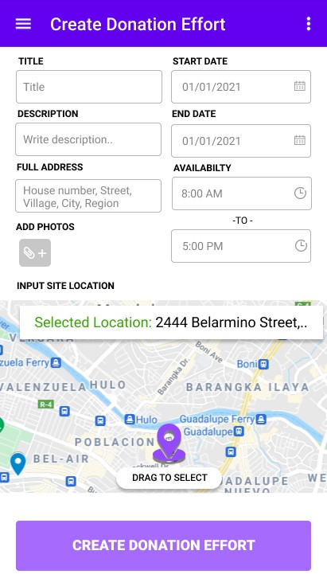
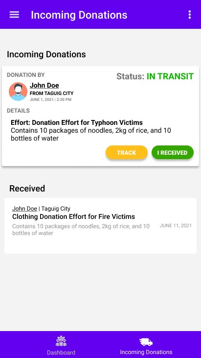
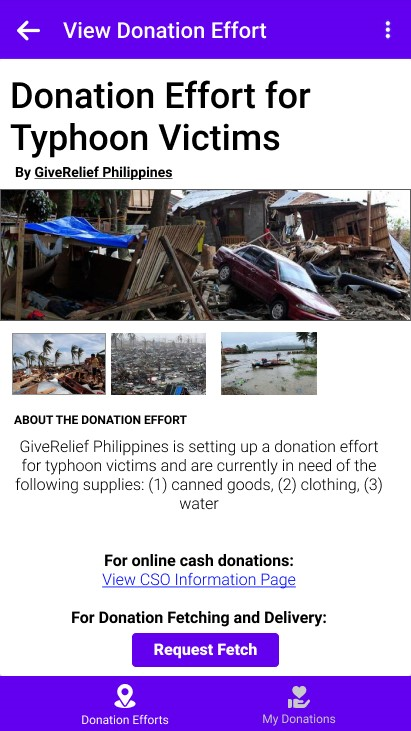
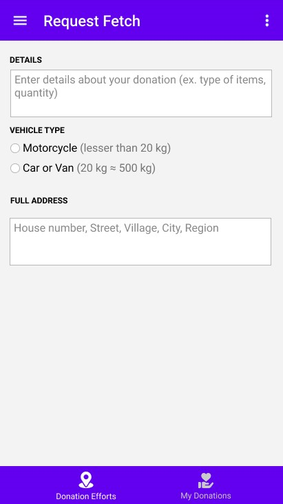

Realifs
A Donation Platform using React-Native and Firestore. It connects donor, delivery persons (fetchers), and donation effort organization (CSO administrators). Implemented features are fetcher tracking, wallet, chat, fetch request, manage donation effort, contact support, authentication.
Human Resources' Perspective
CSO's Perspective




Donor's Perspective




Fetcher's Perspective